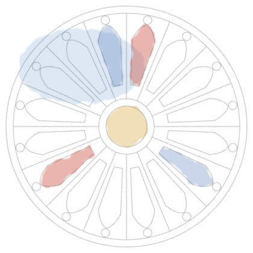
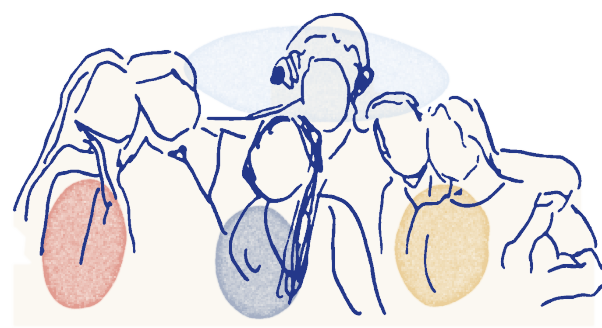
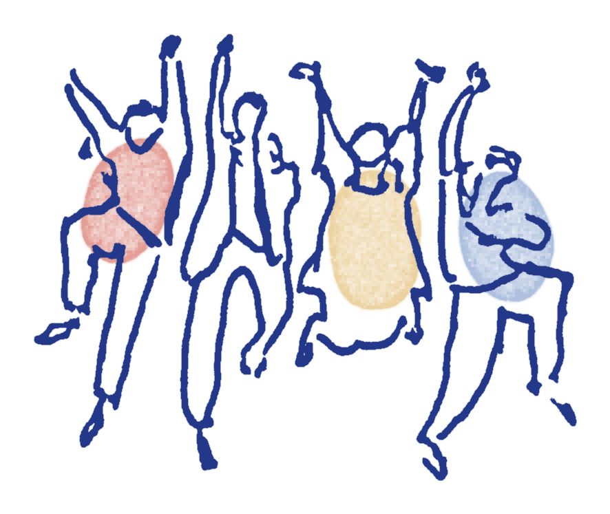

Aimer en Grand · 14-18 ans · Parcours Pilote UP Lausanne Nord
Un pilote aura lieu à Lausanne à partir de novembre 2026 pour parler vrai de l'amitié, du cœur, et de ce que veut dire aimer, à la lumière de la foi catholique.
Avec d'autres jeunes, en lien avec l'Unité Pastorale Lausanne-Nord et son écosystème Connexus.


« Notre seule arme est celle de l'amour qui se donne. »- Léon XIV, veillée de prière avec les jeunes, Stade de France, 25 septembre 2026
« L'homme ne peut vivre sans amour. [...] Sa vie est privée de sens s'il ne reçoit pas la révélation de l'amour.»- Jean-Paul II
Aimer en Grand dans un article de Clotilde Fournier
« Ces initiatives offrent aux jeunes les bases d'une vie affective et relationnelle réussie »
Aimer en Grand veut « offrir un lieu où la relation prend le risque d'être réelle ».
Lire l'article sur Aleteia →Le Parcours · Aimer en Grand
Aimer en Grand n'est pas un cours de catéchisme, ni une liste de ce qu'il faudrait penser sur tel ou tel sujet. C'est une rencontre : un chemin vécu à plusieurs, où l'on part de ce qu'on vit vraiment pour explorer le projet lumineux de Dieu pour les relations.
Ce parcours vise à partir de l'expérience vécue, à la reconnaître, l'éclairer, et à donner des outils pour permettre de faire des choix librement. Il est ancré dans la Théologie du Corps de Jean-Paul II.
« À qui je peux vraiment faire confiance ? »
Jugée « très importante » par 68 % des jeunes · enquête 365 Voix
L'amitié : école de la relation et du don
La confiance, le discernement, la différence entre relation et connexion.
Le corps : lieu de présence
Mon corps dit quelque chose de vrai sur ma capacité à donner et à recevoir.
Les émotions et la liberté intérieure
Lire les émotions comme des signaux, les intégrer dans un mouvement vers le bien choisi.
Aimer librement : altérité et complémentarité
La différence entre désir et don, entre attraction et engagement.
L'amour en vérité
L'amour comme choix qui demande vérité, liberté et maturité.
Se donner : quel est mon appel personnel?
Pour qui et pour quoi suis-je prêt·e à m'engager ?
Pilote UP Lausanne Nord 2026-2027

Rejoins le pilote de Lausanne.
14-18 ans
Places limitées pour le pilote de Lausanne. Écris-nous pour les détails pratiques.
Je m'inscris au parcours →Pourquoi agir maintenant
Les rapports institutionnels (OMS, CESE, HCFEA) convergent vers un même diagnostic : les adolescents ne manquent pas d'informations sur l'amour ou la sexualité. Ils manquent d'adultes pour les accompagner, de repères relationnels, et d'espaces sécurisants pour comprendre ce qu'ils vivent.
des adolescents vivent avec des troubles psychiques en France et en Suisse
OMS Europe / UNICEF-Unisanté, 2024
des moins de 25 ans déclarent une solitude chronique - contre 7% chez les plus de 65 ans
IFOP / Astrée, 2024
des 18-24 ans se sentent régulièrement seuls tout en passant 5h+ par jour devant un écran
IFOP / Goodflair, 2024
des jeunes recourent désormais à l'IA pour des questionnements strictement personnels
Ipsos France, mai 2026
365 Voix · l'enquête Aimer en Grand
365 répondants · 85% de 14 à 18 ans · Europe francophone · Mars-juin 2026. Un exercice d'écoute sous forme de questionnaire digital et ou papier en face-à-face
L'amitié d'abord
79,3% citent l'amitié comme thème qui les touche - devant l'amour (69,8%).
La confiance comme question prioritaire
« À qui je peux vraiment faire confiance ? » - le score le plus élevé de toute la section.
Un déclic par la présence
85,8% consomment des vidéos courtes chaque semaine. Pourtant, seuls 15% citent ce format comme vecteur d'un vrai déclic. Ce qui transforme : la présence et le témoignage.
La sécurité émotionnelle avant tout
« Que les personnes soient honnêtes » (76%) et « ne pas être jugé·e » (75%) dominent les conditions pour parler.
« Les jeunes ne formulent pas leurs besoins depuis le manque. Ils formulent leurs besoins depuis le désir : ils veulent des relations vraies, des interlocuteurs honnêtes, un espace où la parole ne coûte pas trop cher. »
Enquête Aimer en Grand · RésultatsRessources & actualités
Des textes pour prendre le temps d'aller plus loin, et les nouvelles du projet - fondés sur l'enquête Aimer en Grand, la Théologie du Corps, et l'expérience du terrain.
Article · Enquête Aimer en Grand
Ce que les jeunes cherchent vraiment dans leurs relations
Plus d'un jeune sur deux confie ses questions les plus personnelles à une IA plutôt qu'à un proche. Les résultats de l'enquête menée auprès de 365 adolescents racontent une autre histoire : celle d'un désir de relations vraies.
Lire l'article →Actualité · à l'étude
DEEP : un second parcours en préparation
Un accompagnement en projet pour les 17-18 ans qui cherchent des repères pour leurs décisions d'avenir - études, orientation, choix de vie - à partir de leur vécu et éclairé par la foi. Format encore à l'étude, lancement envisagé en 2027.
En savoir plus →Qui sommes-nous
Le projet COR n'est ni un parcours de catéchisme, ni une manière d'exposer ce que l'Église pense de tel ou tel sujet. C'est une approche inspirée de la pédagogie de Saint Jean Paul II qui permet de partir de notre expérience pour mieux comprendre le magnifique plan que Dieu a pour chacun de nous.
Il part d'une conviction : la période 14-18 ans est un moment clef, où la réflexion et le partage sur nous-mêmes, notre intériorité et nos relations aux autres sont essentiels. Notre ambition : créer des espaces ensemble où ces questions de fond peuvent être discutés, avec des repères chrétiens pour les éclairer et un accompagnement pour chaque personne.
Pourquoi « COR » ? C'est le mot latin pour dire cœur. Car le cœur est, comme l'écrit le pape François, "capable d'unifier et d'harmoniser l'histoire personnelle, qui semble fragmentée en mille morceaux mais où tout peut avoir un sens.(...) "c'est lui qui me distingue, me façonne dans mon identité spirituelle et me met en communion avec les autres."
Lorsque "le cœur parle au cœur", l'échange dépasse les seules idées, et, par une présence, d'une personne à une autre, la transformation véritable peut s'opérer dans un vrai cœur à cœur.
À l'origine du projet :
Messiane Cazé
Coordonne la conception et le développement du parcours. Titulaire d'un master en théologie du corps (ITC Lyon), elle a conçu et accompagné plusieurs parcours pour accompagner les jeunes et les moins jeunes sur les grandes questions humaines et relationnelles qui nous occupent.
Mgr Nicolas Brouwet, évêque de Nîmes
Accompagne et soutient ce projet dans sa conception depuis ses débuts
Rejoindre le projet
Que vous soyez éducateur, accompagnateur, responsable pastoral ou simplement convaincu qu'il faut agir maintenant - nous avons besoin de vous pour ce projet.
Coordination
Messiane Cazé
Master Théologie du Corps · ITC Lyon